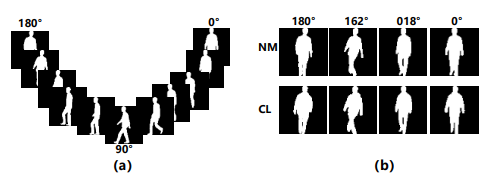

@inproceedings{ren2023mushroom,title={MuSHRoom: Multi-Sensor Hybrid Room Dataset for Joint 3D
Reconstruction and Novel View Synthesis},booktitle={Winter Conference on Applications of Computer Vision (WACV)},author={Xuqian Ren, Wenjia Wang, Dingding Cai, Tuuli Tuominen,
Juho Kannala, Esa Rahtu},year={2024}}
HumanRecon: Neural Reconstruction of Dynamic Human Using Geometric Cues and Physical Priors
Junhui Yin, Wei Yin, Hao Chen, Xuqian Ren, Zhanyu Ma, Jun Guo, Yifan Liu
@inproceedings{yin2023humanrecon,title={HumanRecon: Neural Reconstruction of Dynamic Human Using Geometric Cues and Physical Priors},author={Yin, Junhui and Yin, Wei and Chen, Hao and Ren, Xuqian and Ma, Zhanyu and Guo, Jun and Liu, Yifan},journal={arXiv preprint arXiv:2311.15171},year={2023}}
@inproceedings{ren2021generative,title={A generative adversarial framework for optimizing image matting and harmonization simultaneously},author={Ren, Xuqian and Liu, Yifan and Song, Chunlei},booktitle={2021 IEEE International Conference on Image Processing (ICIP)},pages={1354--1358},year={2021}organization={IEEE}}
Unsupervised Gait Recognition with Selective Fusion
@inproceedings{ren2023unsupervised,title={Unsupervised Gait Recognition with Selective Fusion},author={Ren, Xuqian and Hou, Saihui and Cao, Chunshui and Liu, Xu and Huang, Yongzhen},journal={arXiv preprint arXiv:2303.10772},year={2023}}

Progressive feature learning for realistic cloth-changing gait recognition
@inproceedings{ren2022progressive,title={Progressive feature learning for realistic cloth-changing gait recognition},author={Ren, Xuqian and Hou, Saihui and Cao, Chunshui and Liu, Xu and Huang, Yongzhen},journal={arXiv preprint arXiv:2207.11720},year={2022}}